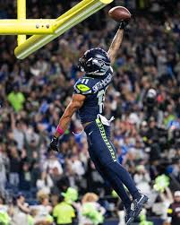

1. Jaxson Smith-Njigba - Wide Reciever

Jaxon Smith-Njigba was the best player on the 2025 Seahawks, winning Offensive Player of the Year. He set a franchise single-season record with 1,793 receiving yards.
2. Kenneth Walker III - Running Back
Kenneth Walker III was named Super Bowl MVP after playing as the Seahawks best offesnive player during their Super Bowl victory
3. Sam Darnold - Quarterback
Sam Darnold led the Seahawks to a franchise-best 14-3 regular season record and guided the team to a Super Bowl in his first season with the Seahawks
4. Witherspoon - Cornerback
Devon Witherspoon was one of the best cornerbacks in the NFL in 2025, earning second-team All-Pro honors. He was a key piece of Seattle's dominant defense nicknamed "The Dark Side."
5. Nick Emmanwori - Safety+
Nick Emmanwori was arguably the best player on Seattle's dominant defense in 2025. While he may not have led the league in any single statistic, his versatility made him one of the most valuable players on the entire roster. Emmanwori was deployed all over the field, creating confusion and forcing mistakes from opposing offenses who simply could not account for everything he was capable of doing. His ability to play anywhere and do anything made him the ultimate weapon in Seattle's championship defense.
Super Bowl LX Highlights
NFL Team Offense Stats 2025
Check out how the Seahawks stacked up against the rest of the NFL offensively in 2025: